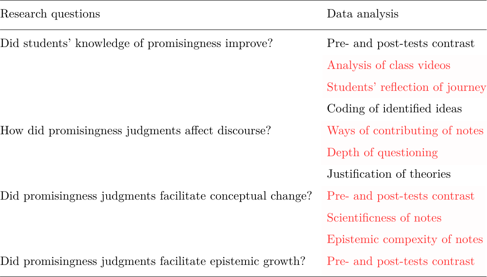

Methods
- 26 Grade 6 students from a Colombian K-12 school
- Studying a biology unit, "population dymanics", for 10 weeks

promisingness vs. truthfulnessDuring all those years there was the feeling of direction, of going straight toward something concrete. It is, of course, very hard to express that feeling in words; but it was decidedly the case, and clearly to be distinguished from later considerations about the rational form of the solution.
— Albert Einstein, Nobel laureate in physics, 1921
I think, we almost felt at times that there was almost a hand guiding us. Because we would go from one step to the next, and somehow we would know which was the right way to go.
— Michael S. Brown, Nobel laureate in medicine, 1985
During an interview, a Grade 5 student said:
Science is about failure... Everyone makes mistakes and scientists especially. Because they’re going to try something and it's not always going to work... So science isn't about learning what other people have learned. Science is about finding things out for yourself... It's kind of like ... trial and error. So you're going to learn lots about it, but sometimes you're not going to get the right one.



"It is true. You have the observation that is true."
"It depends on the person who write the answer because ... if the answer is answered by a scientist, the answer can be more accurate."
"We think promising idea is like a possible answer. It probably can be correct."
"I don't think it's absolutely correct because ... we don't think promising means absolutely correct but near correct."
"I disagree with ... I think that's not necessary an expert can make a promising answer. ... Because the promising question takes time, not like a question you're doing in a second."
"I think what makes ideas promising is ... it produces interests of further investigation or discussion..."
"A promising idea is not the answer, it is the idea that lead you to discussion. As we said before, they are not necessarily the correct answer, but those topics can lead you to discuss and be engaged, and learn a little bit about that topic."


Gender difference
Correlations